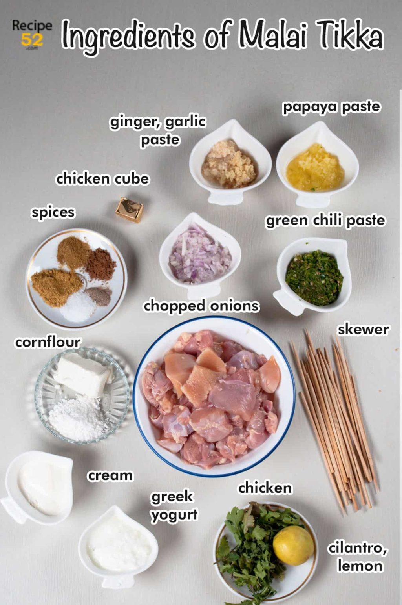

Recipe
INGREDIENTS

- Chicken: Use boneless thigh pieces for the best taste. Marinate longer like overnight if using chicken breast pieces for juicy tender chicken. You can easily adapt this recipe for any chicken cut, boneless chicken cubes, and chicken leg or chicken chest are popular.
- Greek yogurt: If you do not have greek yogurt just put plain yogurt in a fine strainer and let some water drain for 10 minutes. Use this thick yogurt in the recipe.
- Onions: You can substitute chopped onions with ½ tablespoon of onion powder.
- Raw Papaya paste: is raw green papaya processed into a paste. It is used in Indian cooking to tenderize meat. You can use meat tenderizer powder as well.
- Spices: Roasted and grounded cumin and coriander taste amazing in this recipe. But to keep the recipe simple I used regular cumin and coriander powder.
- Chicken cube: Most foods that are served at restaurants have flavor enhancers like MSG. With the chicken cube, you get the same taste. You may use MSG-free chicken cube or chicken powder or skip it altogether with a little compromise on the taste.
HOW TO MAKE IT?
This is a very simple and quick recipe that is delicious and great for weekday meals. Let's move on to the simple recipe.
- Wash and pat dry chicken cubes. (If using chicken breast, wash and pat dry chicken breast first and then cut into 1-inch cubes.)
- Add the first set of ingredients and mix well. ( The tenderizer needs at least 45 minutes to work so the idea is to apply the tenderizer and available spice as soon as possible to save time.)
- Then I assembled the remaining ingredients that needed chopping. I mixed it with yogurt, cream cheese, and cream.
- And added this marinade also to the chicken. (Actually, you can mix all ingredients of the marinade together and apply in one go, I separate steps only to save time.)
- Mix well and marinate chicken for a total of 45 minutes at least or 2 hours preferably. You can marinate it up to12 hours ahead and store it in the fridge.
- Thread the chicken on the wooden skewers. ( Instruction for barbecue and baking are above in the FAQ section.)
- Grill malai chicken skewers in a nonstick pan. Heat oil and place the tikka skewer in the oil. Cover the skewers with a lid and let them cook for 3-4 minutes on medium heat. Then remove the lid and cook on high heat for 1-2 minutes until the water dries and tikka are lightly golden.
- Serve immediately, or you can smoke for 2 minutes with red hot charcoal and a drizzle of oil and serve. (Try to prepare the serving plate with veggies and heat the charcoal ahead of frying so you can smoke and serve immediately.)